Qué referencias encajan con el scroll continuo
Las dos referencias que mejor acreditan el patrón solicitado son Business Calendar 2 en Android y Monthly Calendar Moca en iPhone: sus desarrolladores describen expresamente la continuidad entre meses. Para el resto se separa lo visible en las imágenes de los gestos documentados y de lo que falta probar.
Scroll mensual continuo significa poder recorrer semanas contiguas y cruzar un límite de mes en la misma superficie. No basta con que se vean días del mes vecino, que una agenda se desplace o que un gesto vertical salte al siguiente mes. El ajuste automático al principio del mes y el desplazamiento libre pueden coexistir, como documenta Business Calendar 2.
Las imágenes proceden de documentación oficial, tiendas, guías y repositorios visuales. Se mantienen originales, con sus marcos, fechas, textos y anotaciones. No se han generado pantallas con IA. La versión de una ficha de tienda no identifica automáticamente la versión de una captura antigua. No se han ejecutado las apps en dispositivos físicos para este trabajo.
La imagen que has aportado
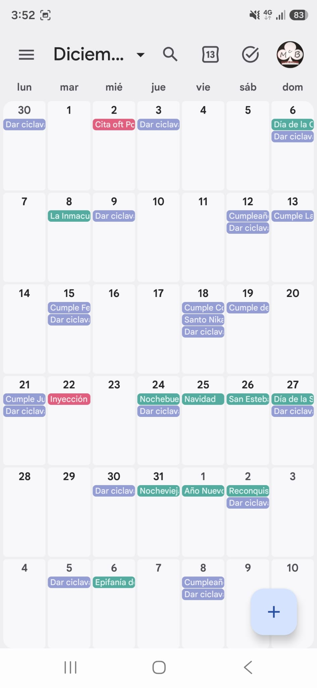
La referencia aportadaInterfaz atribuible visualmente a Google Calendar sobre un Samsung; la versión de la aplicación no está identificada.
Imagen aportada por el usuario · 945 × 2048 pxIdentificación visual
La cabecera con avatar de cuenta, tareas y mes desplegable coincide con Google Calendar. Que el teléfono sea Samsung no convierte esa interfaz en Samsung Calendar. Se trata de una atribución visual; falta el nombre y la versión de la aplicación para confirmarlo por datos del sistema.
Elementos relevantes
- Fondo gris y celdas blancas redondeadas.
- Fechas grandes y centradas al inicio de cada celda.
- Etiquetas de color que truncan sus títulos.
- Mucho espacio vertical por semana.
- Semanas con fechas de diciembre y enero.
- Botón más flotante en la parte inferior derecha.
La captura permite comparar el look and feel. No demuestra si el calendario se detiene entre meses, si ajusta automáticamente la página o cómo responde a un gesto largo.
Comparación de la navegación mensual
Scroll mensual continuo significa poder recorrer semanas contiguas y cruzar un límite de mes en la misma superficie. No basta con que se vean días del mes vecino, que una agenda se desplace o que un gesto vertical salte al siguiente mes. El ajuste automático al principio del mes y el desplazamiento libre pueden coexistir, como documenta Business Calendar 2.
| Referencia | Patrón documentado u observado | Continuidad |
|---|
| Samsung Calendar | Paginación horizontal documentada | No acreditada en la referencia |
| Apple Calendar | Continuación vertical visible; gesto por confirmar | Candidato visual, no ensayo de interacción |
| Google Calendar | Continuidad libre no acreditada | No confundir selector de fecha con cuadrícula |
| Xiaomi Mi Calendar | Mi Calendar: gesto no verificado | Google en Xiaomi es otra aplicación |
| Calendario observado en OPPO | Google Calendar, no interfaz propia acreditada | No verificada |
| Huawei Calendar | Mes con agenda inferior | No verificada |
| Business Calendar 2 | Scroll mensual continuo documentado | Sí, con ajuste según el gesto |
| Monthly Calendar Moca | Meses unidos verticalmente documentados | Sí, según el desarrollador |
| aCalendar | Navegación vertical por periodos | No acreditada como scroll libre |
Marca de móvil y aplicación no son equivalentes
| Familia | Aplicación de referencia | Matiz |
|---|
| Samsung Galaxy | Samsung Calendar o Google Calendar | La imagen del usuario parece Google; se incluyen ambos diseños. |
| iPhone | Apple Calendar; Moca como alternativa | Moca acredita continuidad de meses en su ficha. |
| Google Pixel | Google Calendar | Los recursos de tienda son de la app, no prueba de un Pixel concreto. |
| Xiaomi y Redmi | Mi Calendar o Google Calendar | Xiaomi documenta Google en REDMI Note 12; no generalizar por marca. |
| OPPO | Google Calendar en la guía ColorOS 11 | No se ha acreditado aquí un diseño mensual propio para otras regiones. |
| Huawei | Huawei Calendar en EMUI 12 | No equivale a HarmonyOS NEXT. |
| OnePlus | Google Calendar documentado en OnePlus 8T | Se remite al kit Google; no hay captura propia mensual del 8T en este catálogo. |
Para OnePlus se usa el manual oficial de OnePlus 8T. No se convierte esa referencia en una afirmación sobre todos los OnePlus actuales.
Iconos incluidos
Samsung Calendar
Icono publicado
150 × 150 px
Apple Calendar
Icono de tienda
512 × 512 px
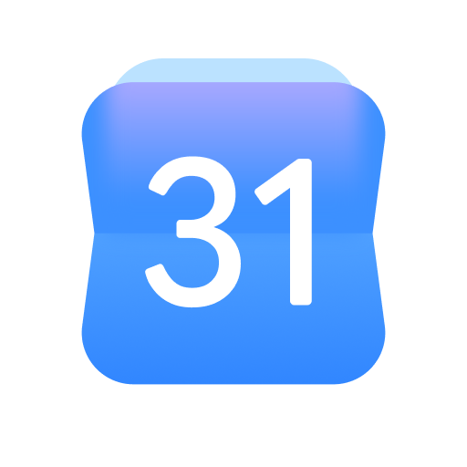
Google Calendar
Icono de tienda
512 × 512 px
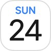
Xiaomi Mi Calendar
Icono publicado
100 × 100 px
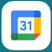
Calendario observado en OPPO
Recorte de captura
105 × 105 px
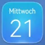
Huawei Calendar
Recorte de captura
77 × 77 px
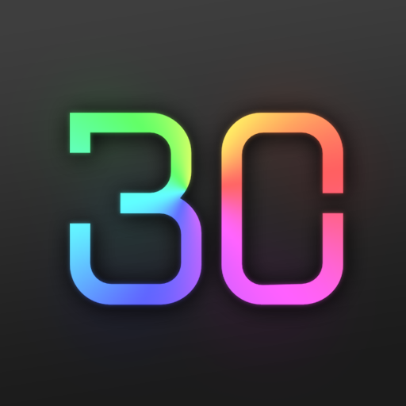
Business Calendar 2
Icono de tienda
512 × 512 px
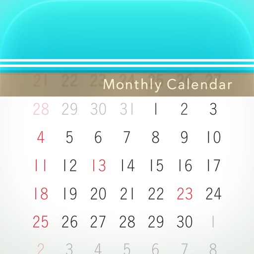
Monthly Calendar Moca
Icono de tienda
512 × 512 px
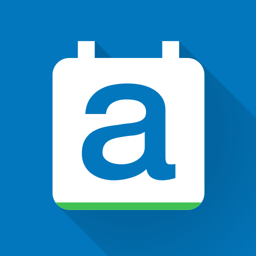
aCalendar
Icono de tienda
512 × 512 px
El icono Google recortado de OPPO corresponde a la captura antigua. La variante Google de Xiaomi también se entrega en su carpeta. No se han vectorizado ni reconstruido iconos de baja resolución.
Samsung Galaxy
Samsung Calendar
One UI 6 y Android 14 en TechBone; apoyo visual de Samsung sin versión exacta.
Diseño muy despejado y casi monocromo. El mes aparece centrado en mayúsculas, las líneas semanales son discretas y las fechas de meses vecinos se atenúan. Los eventos ocupan pequeñas bandas dentro de las celdas; la selección se distingue mediante un contorno vertical redondeado.
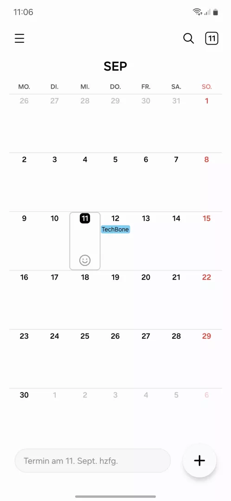
Mes completoSeptiembre en One UI 6; permite estudiar la densidad y los límites de celda.
Captura publicada · 498 × 1080 px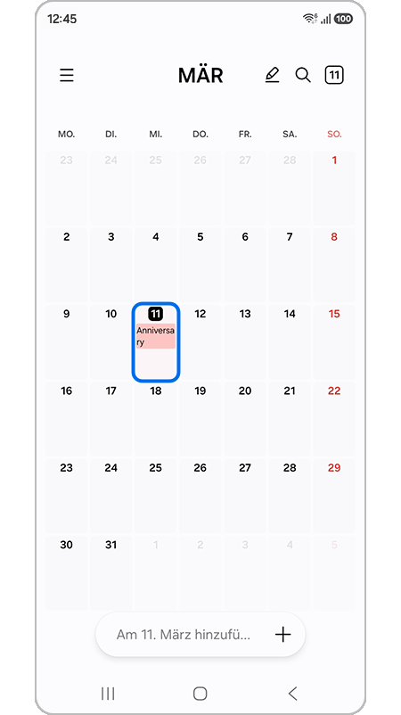
Mes con eventoReferencia oficial con un evento y un día seleccionado; anotaciones del tutorial.
Captura publicada · 450 × 802 px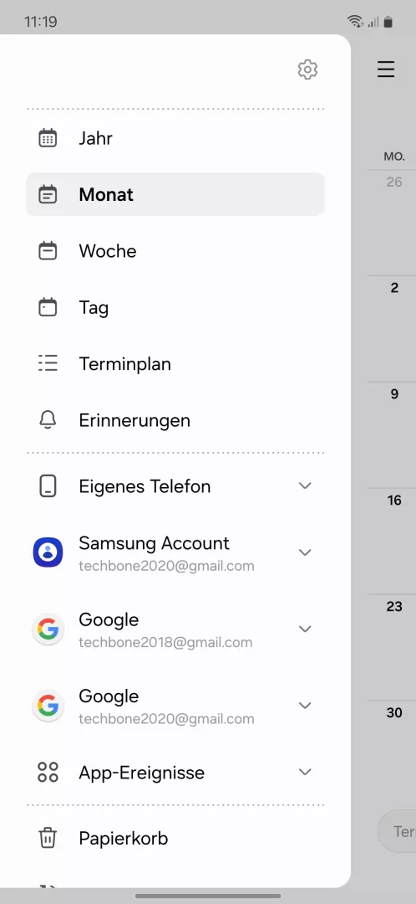
Selección de vistasMenú con Año, Mes, Semana, Día y agenda; se incluye como contexto.
Captura publicada · 498 × 1080 pxElementos de pantalla
- Cabecera con menú, búsqueda y acceso a hoy.
- Cuadrícula de siete columnas con domingos en rojo.
- Evento con título dentro del día; selección con borde.
- Entrada rápida y botón más en la parte inferior.
Icono de la aplicación
Icono oficial de fondo verde y hoja blanca. Se conserva el recurso publicado y su número de ejemplo.
Cómo se navega entre meses
La guía oficial de Samsung de julio de 2022 indica deslizar a izquierda o derecha para cambiar de mes. Deslizar hacia arriba amplía información del día seleccionado; ese gesto no debe confundirse con un calendario mensual continuo.
Evidencia: Alta para la guía de 2022; no se ha ensayado la versión One UI 6.
Las capturas con anotaciones azules proceden del tutorial oficial; las flechas o bordes añadidos por la guía no son componentes permanentes de la aplicación.
Fuentes
iPhone y iOS
Apple Calendar
Guía oficial consultada en noviembre de 2026 y capturas de la beta iOS 18 publicadas en junio de 2024.
El nombre del mes es grande y contundente. El espacio entre semanas y el volumen de información cambian con el modo elegido: indicadores compactos, barras apiladas, títulos detallados o mes con lista inferior. En la beta oscura, las acciones usan rojo y los eventos adoptan colores de calendario.
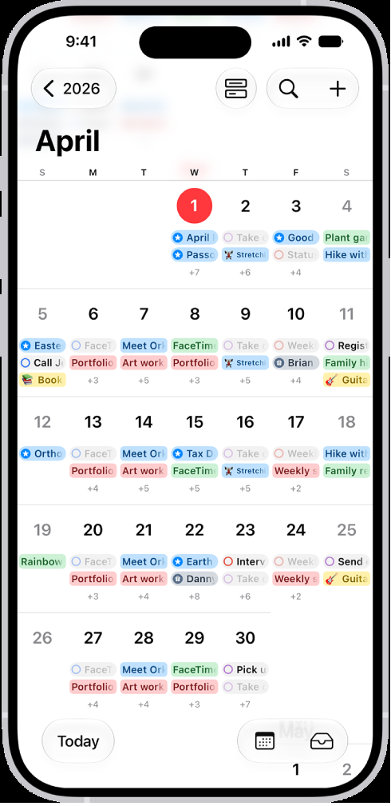
Mes con detalles en la guía oficialImagen de Apple consultada en 2026; terminal concreto no identificado.
Captura publicada · 490 × 1008 px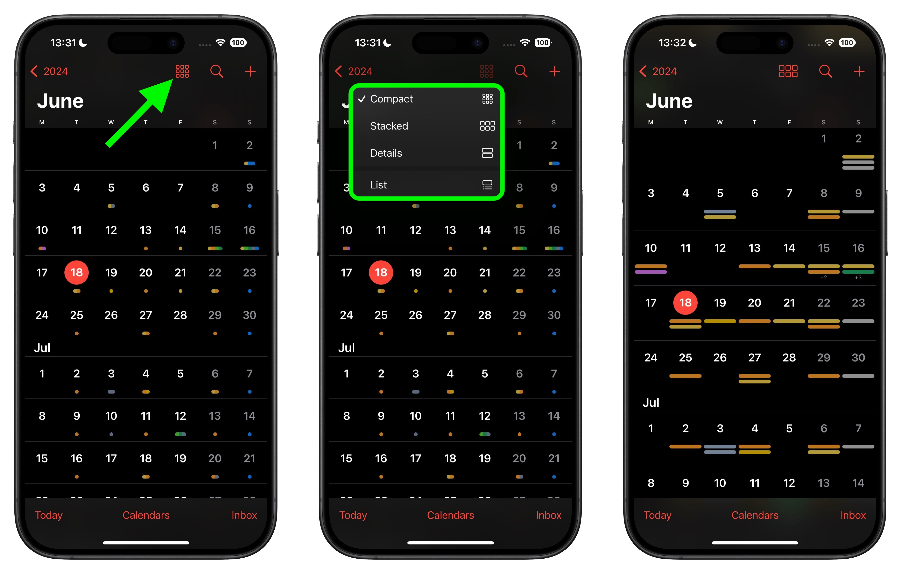
Modos de la beta iOS 18Composición editorial con varios modos y anotaciones de MacRumors.
Captura publicada · 4377 × 2796 px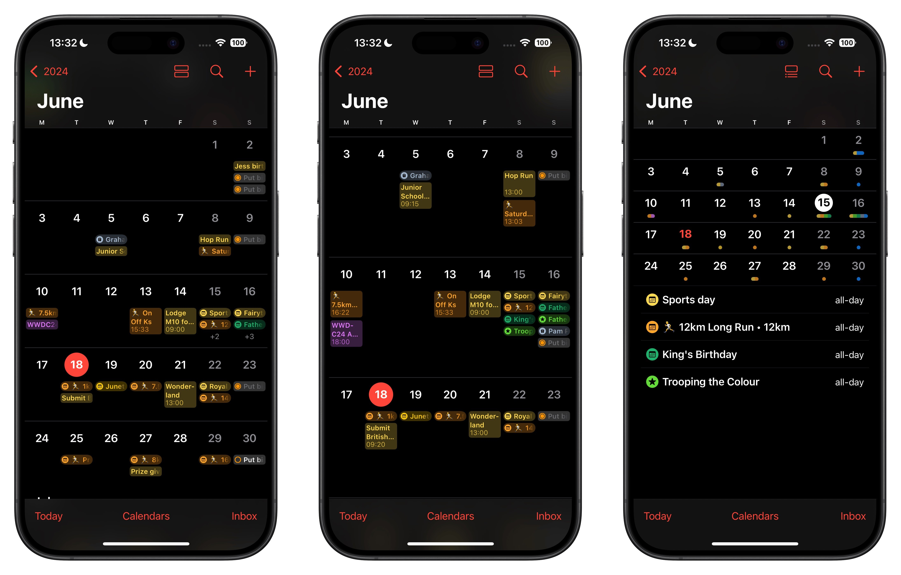
Densidad y detalle en iOS 18 betaCompara dos densidades mensuales y una vista con lista inferior.
Captura publicada · 4377 × 2796 pxElementos de pantalla
- Nombre del mes y acceso al año.
- Selector de presentación, búsqueda y más.
- Separadores horizontales entre semanas.
- Eventos con texto o indicadores según el modo; controles inferiores.
Icono de la aplicación
Hoja clara con día de la semana y número. El icono de tienda es una referencia independiente de las capturas de iOS 18.
Cómo se navega entre meses
Es una referencia útil para una cuadrícula vertical de semanas y para variar la densidad. Las composiciones muestran continuaciones al borde inferior y filas de distinta altura. No se ha probado en dispositivo si la versión actual permite detener el desplazamiento libremente entre dos meses.
Evidencia: Alta para los modos oficiales; la continuidad libre no se certifica.
Las imágenes de 2024 corresponden a una beta: no son capturas del iOS actual. La ilustración de Apple se identifica por separado.
Fuentes
Pixel y otros Android, incluido Samsung
Google Calendar
Imagen del usuario sin versión identificada y recursos de Google Play consultados el 19 noviembre 2026.
La referencia aportada organiza cada día como una tarjeta muy alta y redondeada sobre un fondo gris claro. Las etiquetas de evento son bandas de color con texto blanco truncado. La cabecera reúne el mes, búsqueda, hoy, tareas y cuenta; el botón más flota abajo a la derecha.
La referencia aportadaInterfaz atribuible visualmente a Google Calendar sobre un Samsung; la versión de la aplicación no está identificada.
Imagen aportada por el usuario · 945 × 2048 px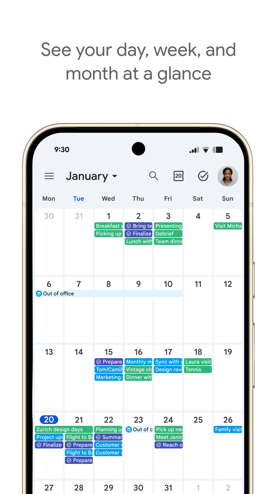
Mes en la ficha de Google PlayImagen promocional con marco de teléfono y texto comercial.
Captura publicada · 1080 × 1920 px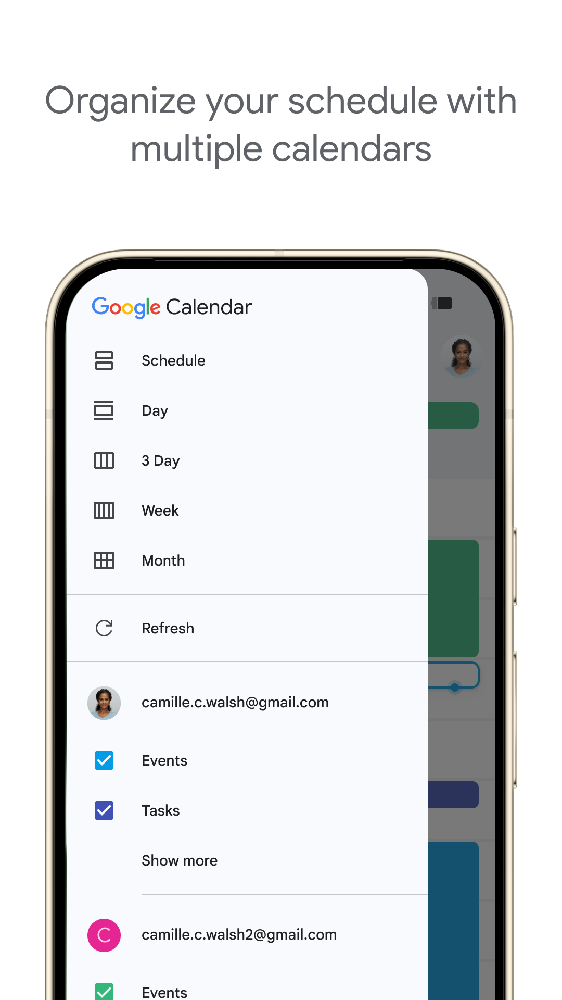
Menú de vistasMaterial promocional: incluye la opción Month y los calendarios visibles.
Captura publicada · 1080 × 1920 px Elementos de pantalla
- Menú lateral y mes desplegable.
- Siete columnas y varias filas de días.
- Bandas de eventos por color de calendario.
- Fechas del mes vecino al final y botón más flotante.
Icono de la aplicación
El recurso de tienda consultado tiene un 31 blanco sobre una forma azul con volumen. En capturas anteriores aparece el icono multicolor plano; no se mezclan como si fueran el mismo archivo.
Cómo se navega entre meses
La ayuda oficial documenta la selección de Mes y un selector de fecha cuyos meses se recorren horizontalmente. Eso no prueba por sí solo el gesto de la cuadrícula principal. Hay reportes de usuarios de 2024 sobre paginación horizontal; la captura enviada no permite verificar el gesto ni un scroll mensual libre.
Evidencia: Alta para el diseño visible; limitada para el movimiento en la versión aportada.
La imagen enviada parece Google Calendar por la cuenta, el acceso a tareas y la estructura de la cabecera. Es una atribución visual, no una lectura de la información de la app.
Fuentes
MIUI y HyperOS; variante según región
Xiaomi Mi Calendar
Archivo de Uptodown con capturas de 2018 y 2023; no se conoce la versión exacta que produjo cada imagen.
La referencia propia de Xiaomi dedica la parte superior a un mes compacto y la inferior a tarjetas de agenda o notas. En oscuro, números blancos y grises sobre negro con un día seleccionado azul. La referencia antigua clara utiliza una cabecera lavanda. No llena cada día con grandes títulos como el ejemplo de Google.
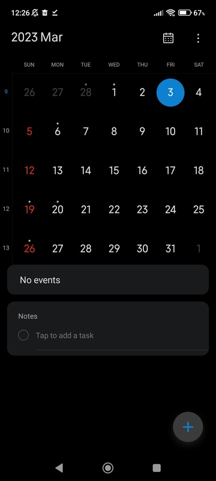
Mi Calendar mensual oscuroLa imagen muestra marzo de 2023; versión exacta de captura desconocida.
Captura publicada · 360 × 800 px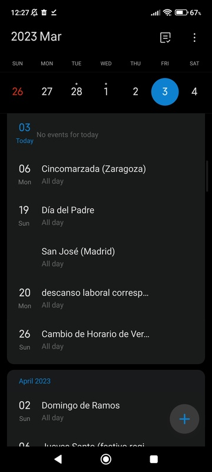
Agenda y franja de fechasVista alternativa para comparar la separación entre fechas y lista.
Captura publicada · 360 × 800 px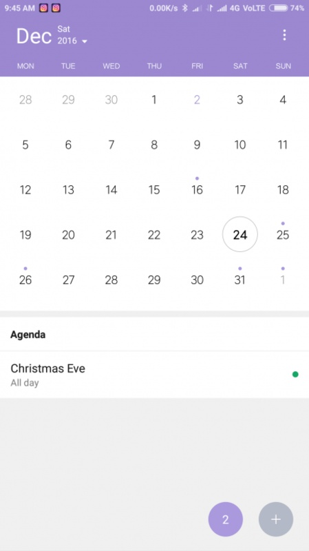
Mi Calendar claro de archivoImagen con diciembre de 2018, cabecera lavanda y agenda inferior.
Captura publicada · 449 × 800 px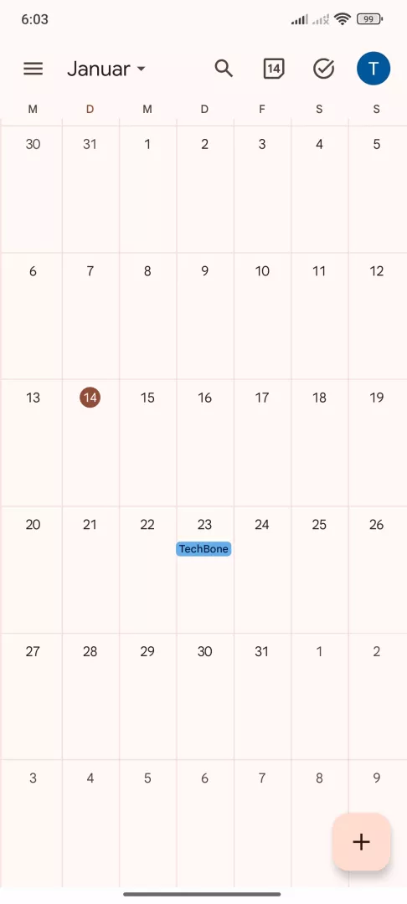
Google Calendar en HyperOS 2Android 15 y HyperOS 2 según TechBone. No es el diseño de Mi Calendar.
Captura publicada · 486 × 1080 pxElementos de pantalla
- Cabecera de mes y selector de vista.
- Mes compacto de siete columnas.
- Selección circular azul y días adyacentes atenuados.
- Agenda, notas o módulos informativos bajo el mes.
Icono de la aplicación
Mi Calendar usa una hoja clara con SUN y número negro. Se añade también el icono Google observado en HyperOS 2 como variante separada.
Cómo se navega entre meses
Las capturas prueban el mes y la agenda inferior, pero no el movimiento continuo entre meses. En Xiaomi también existe la variante Google Calendar: Xiaomi documenta esa app en REDMI Note 12 y la guía de HyperOS 2 la muestra explícitamente.
Evidencia: Alta para las imágenes; sin comprobación de continuidad de la app propia.
La ficha del repositorio puede mostrar hoy una versión nueva mientras mantiene capturas antiguas. No se atribuyen esas pantallas a HyperOS 4 ni a la versión anunciada en la ficha.
Fuentes
OPPO y ColorOS 11
Calendario observado en OPPO
Android 11 y ColorOS 11 según la guía visual; aplicación identificada en su menú como Google Calendar.
La pantalla observada utiliza una cuadrícula mensual de gran altura, líneas finas grises y un pequeño evento azul. El día actual se marca con un círculo azul. El mes y los controles se alinean arriba; el botón de creación queda en la esquina inferior.
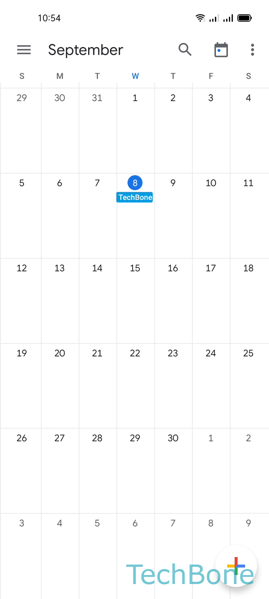
Mes completo en OPPOCaptura de la guía ColorOS 11; contiene la marca de agua de TechBone.
Captura publicada · 720 × 1600 px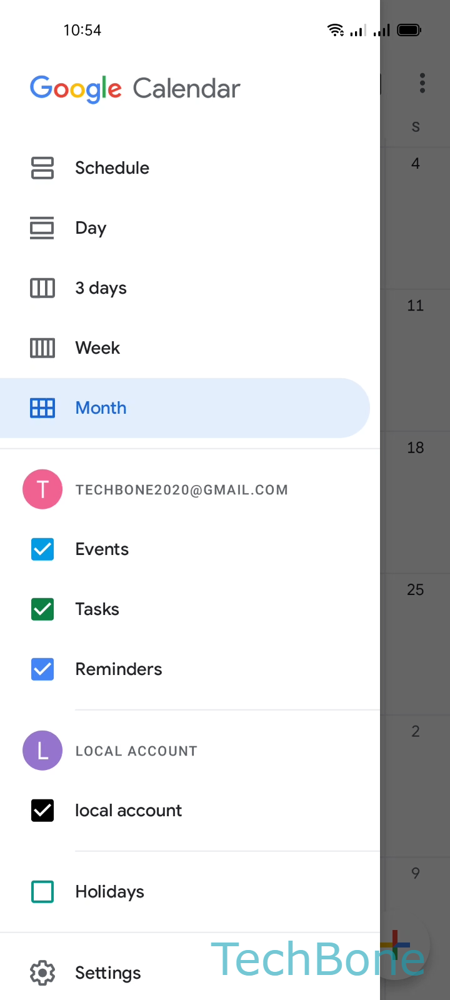
El menú identifica Google CalendarPrueba visual de la aplicación utilizada en esta guía.
Captura publicada · 720 × 1600 pxElementos de pantalla
- Cabecera con menú, mes, búsqueda, hoy y opciones.
- Siete columnas con cinco o seis filas.
- Día destacado en azul y evento con título abreviado.
- Menú lateral con Month y el nombre Google Calendar.
Icono de la aplicación
El icono multicolor con 31 se recorta de la pantalla original para corresponder a esta referencia histórica, en lugar de sustituirlo por el icono de tienda actual.
Cómo se navega entre meses
Para esta referencia se aplica la distinción de Google Calendar entre selector y cuadrícula principal. No se ha acreditado una modalidad de scroll mensual continuo ni se ha probado el gesto en ese terminal.
Evidencia: Alta para identificar Google: el menú lo nombra.
No se ha obtenido una secuencia mensual verificable de una app propia de OPPO para otras regiones. Este kit documenta la configuración observada y no la generaliza a todo ColorOS.
Fuentes
Huawei y EMUI 12
Huawei Calendar
Android 10 y EMUI 12 según la secuencia visual.
La vista mensual ocupa aproximadamente la mitad superior; la inferior se reserva para la agenda del día. El diseño es blanco y gris, con acentos azules. Una fila de pestañas visibles hace explícitas las vistas Año, Mes, Semana, Día y eventos.
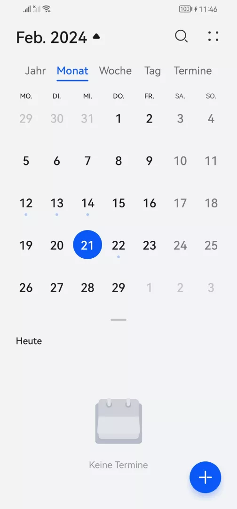
Mes con agenda del díaMuestra febrero de 2024 y el día seleccionado.
Captura publicada · 504 × 1080 px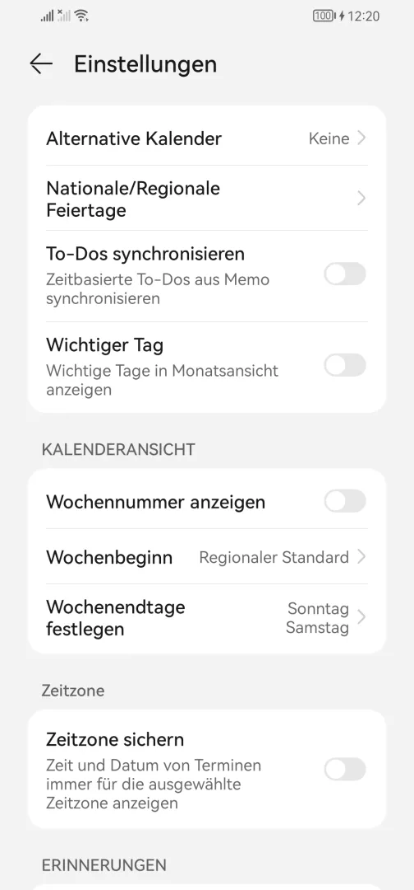
Ajustes de presentaciónOpciones de semana, días de fin de semana y otros ajustes; contexto de personalización.
Captura publicada · 504 × 1080 pxElementos de pantalla
- Mes y año desplegables con búsqueda y menú.
- Pestañas de vistas inmediatamente debajo.
- Cuadrícula compacta y selección circular azul.
- Separador, agenda inferior y botón más azul.
Icono de la aplicación
Recorte de 77 píxeles con degradado azul, día de la semana y número 21. La fecha visible pertenece al instante capturado.
Cómo se navega entre meses
La coexistencia de mes y agenda se observa directamente. El desplazamiento de la agenda inferior no acredita continuidad de la cuadrícula mensual. La dirección y el ajuste final del gesto entre meses no se han comprobado para esta versión.
Evidencia: Alta para la composición; sin prueba del gesto mensual.
Referencia EMUI 12: no se presenta como el calendario de HarmonyOS NEXT o de un dispositivo Huawei reciente.
Fuentes
Android, alternativa especializada
Business Calendar 2
Recursos de tienda consultados en 2026 y pantallas históricas de la ayuda del desarrollador.
Cuadrícula densa y funcional, con eventos presentados como texto o barras. Una barra inferior permite distinguir calendarios por color. La ayuda muestra una ventana de detalle sobre el propio mes. Los materiales de tienda ilustran también temas claros y oscuros.
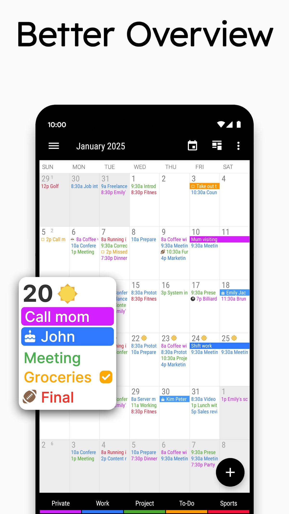
Mes en material de tiendaImagen promocional con detalles superpuestos.
Captura publicada · 1200 × 2134 px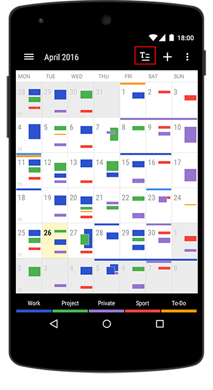
Mes con barrasReferencia histórica de la ayuda del desarrollador.
Captura publicada · 350 × 640 px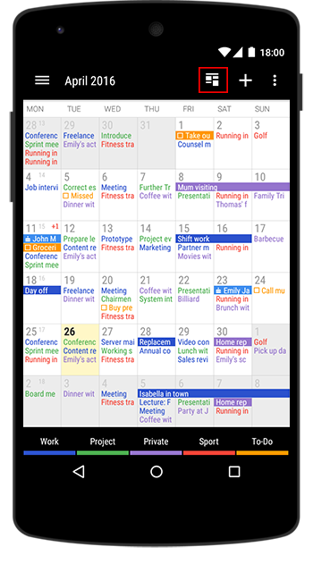
Mes con títulosMismo diseño de ayuda, con títulos en lugar de barras.
Captura publicada · 350 × 640 px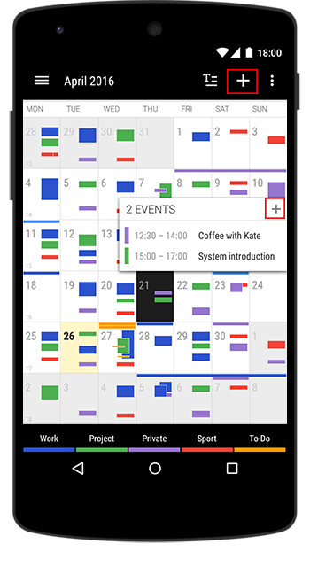
Detalle sin abandonar el mesVentana del día sobre la cuadrícula mensual.
Captura publicada · 350 × 640 pxElementos de pantalla
- Mes y controles de vista en la cabecera.
- Celdas con barras o títulos, según presentación.
- Ventana superpuesta con los eventos del día.
- Barra de calendarios y acción de creación.
Icono de la aplicación
El recurso de tienda usa un 30 multicolor sobre fondo oscuro. No se interpreta ese número como la fecha dinámica del teléfono.
Cómo se navega entre meses
Es el caso Android con continuidad documentada de forma explícita por su desarrollador: gestos verticales cortos ajustan al principio del mes; gestos largos recorren el límite entre meses; mantener el dedo y arrastrar permite avanzar gradualmente por semanas.
Evidencia: Alta documental; no se ha ejecutado la app en este trabajo.
Las capturas del centro de ayuda tienen fechas de 2016 y 2020. Se separan de la promoción de tienda actual; algunas funciones y temas pueden depender de la edición.
Fuentes
iPhone, alternativa especializada
Monthly Calendar Moca
Recursos de App Store consultados el 19 noviembre 2026; las imágenes promocionales no identifican su versión de captura.
Presentación enfocada en el mes: cuadrícula fina, poco espacio decorativo y títulos pequeños por día. Una etiqueta de mes grande y muy tenue ayuda a situarse en la secuencia. La promoción muestra temas y controles de densidad sin abandonar la organización mensual.
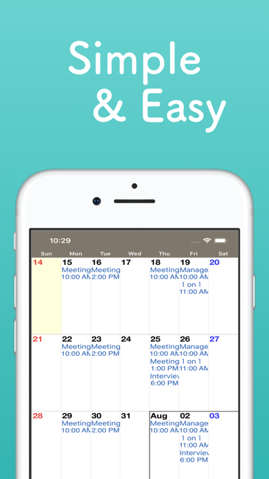
Límite entre mesesImagen promocional con semanas de julio y agosto en la misma secuencia.
Captura publicada · 392 × 696 px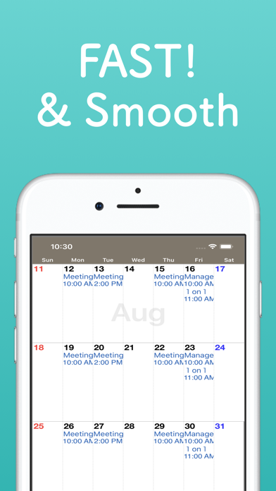
Rótulo de mes y cuadrículaPromoción que presenta el desplazamiento como rápido y suave; no es una medición.
Captura publicada · 392 × 696 px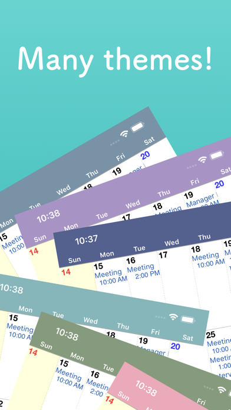
Variaciones de temaMaterial de tienda con varias paletas.
Captura publicada · 392 × 696 pxElementos de pantalla
- Cabecera semanal fija en la composición mostrada.
- Semanas enlazadas y rótulo tenue del mes.
- Títulos de eventos en el color de su calendario.
- Selección de día y herramientas en la parte inferior.
Icono de la aplicación
La imagen de tienda representa una pequeña hoja mensual bajo una cabecera turquesa. No es el icono de Apple Calendar.
Cómo se navega entre meses
La descripción publicada por el desarrollador en App Store indica meses unidos verticalmente y desplazamiento continuo hacia arriba o abajo, incluyendo la transición al mes siguiente. Es la referencia iPhone que mejor acredita documentalmente el patrón solicitado.
Evidencia: Alta documental; sin prueba de animación ni rendimiento.
La promoción contiene marcos de iPhone antiguos. La fecha de consulta de la ficha no convierte esas imágenes en capturas recientes.
Fuentes
Android, alternativa especializada
aCalendar
Captura mensual oscura de la ficha de Google Play con octubre de 2018; versión exacta de la imagen no indicada.
Cuadrícula de alta densidad, con pequeños títulos por día y barras que atraviesan varios días para eventos largos. En la muestra oscura, los fines de semana se distinguen con fondos de distinto tono y el evento usa color sobre el negro o gris del mes.
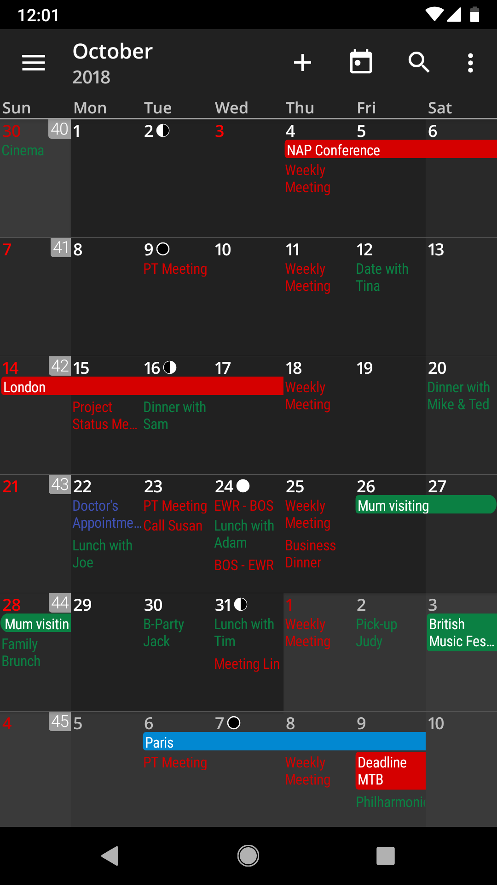
Mes de alta densidadCaptura publicada en Google Play; fecha visible de octubre de 2018.
Captura publicada · 1080 × 1920 px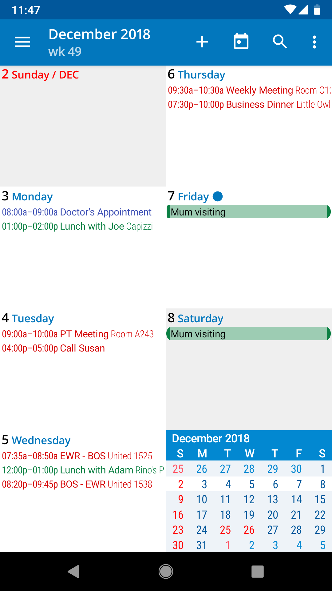
Semana como contextoVista semanal de la misma ficha; permite entender el cambio de vista, no se cuenta como mensual.
Captura publicada · 1080 × 1920 pxElementos de pantalla
- Mes y herramientas en una cabecera compacta.
- Números de semana junto al calendario.
- Eventos como texto y bandas de varios días.
- Filas con días del siguiente mes al final.
Icono de la aplicación
Hoja blanca con una a azul, borde inferior verde y fondo azul. El recurso de tienda y la pantalla mensual pueden ser de generaciones distintas.
Cómo se navega entre meses
El desarrollador documenta arriba/abajo para ir al periodo anterior o siguiente y desplazamiento de dos dedos para saltos mayores. Izquierda/derecha cambia entre las vistas Mes, Semana y Día. Una navegación vertical por periodos no demuestra, por sí sola, continuidad libre entre semanas.
Evidencia: Alta para los gestos descritos por el desarrollador.
Se incorpora para distinguir dirección vertical de continuidad. No se presenta como otro ejemplo confirmado de la interacción de Business Calendar 2.
Fuentes
Qué extraer de la comparación
Para estudiar la interacción continua. Empezar por Business Calendar 2 y Moca. El primero documenta cómo combinar ajuste por mes y arrastre por semanas; el segundo organiza los meses enlazados verticalmente.
Para estudiar la densidad. Comparar Apple en sus modos compacto y detallado con Google y Samsung. Una cuadrícula poco cargada no garantiza legibilidad cuando se llenan sus celdas.
Para estudiar la separación mes y agenda. Mi Calendar y Huawei son útiles: conservan un mes compacto y reservan otra zona a la lista del día. Esa separación cambia la jerarquía visual respecto a una cuadrícula a pantalla completa.
Para diseñar una transición de mes. Conservar la alineación de los siete días, distinguir las fechas del mes vecino y mantener visible el mes de referencia. Son criterios propuestos a partir del análisis, no resultados de pruebas con usuarios.
Para comparar iconos. Separar el archivo de tienda del icono observado en el teléfono. Fecha, tema, lanzador y versión pueden cambiar el aspecto. Los números de ejemplo no demuestran por sí solos un icono dinámico.
Alcance de la evidencia
«Documentado» significa que el fabricante o desarrollador describe el comportamiento. «Visible» se limita a la composición de una imagen. «No verificado» evita deducir movimiento, ajustes o continuidad a partir de una captura fija. No se han medido dimensiones táctiles, contraste, rendimiento ni accesibilidad.
Los ejemplos de distintas fechas y regiones se identifican dentro de cada ficha. La muestra de OPPO usa Google Calendar; no se ha obtenido evidencia equivalente de su variante propia regional. No se afirma que todas las versiones actuales reproduzcan estas pantallas.
Créditos
Las capturas, iconos y marcas pertenecen a sus respectivos titulares. La recopilación conserva fuentes y contexto de uso; no concede licencia comercial sobre estos recursos. La imagen de referencia procede del usuario y se conserva en una carpeta separada.